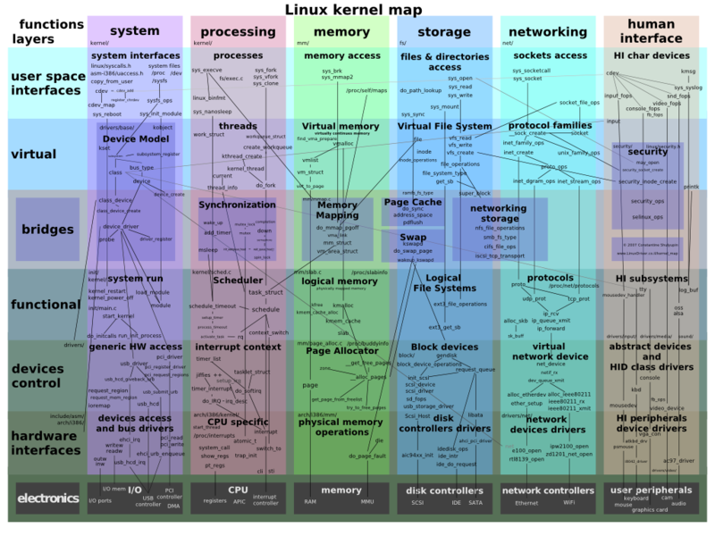
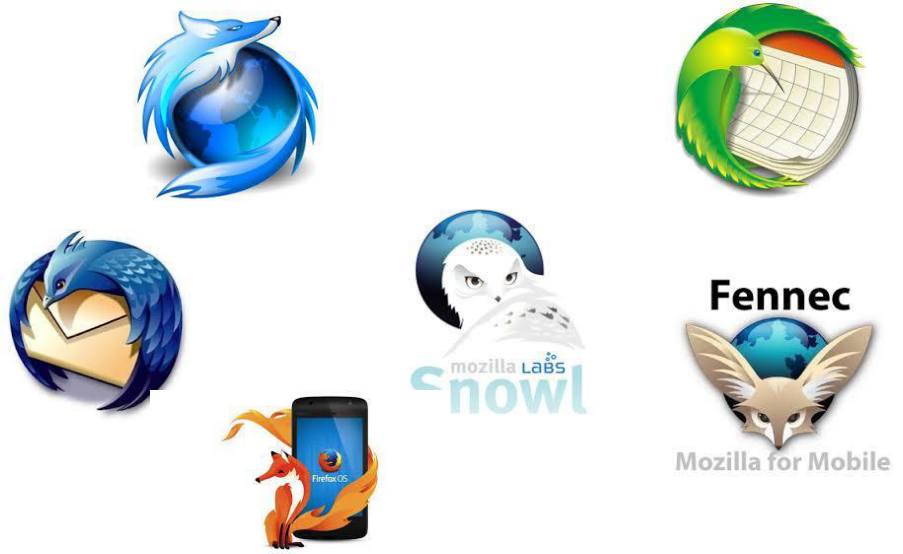

BFC Orientation
Bon Voyage towards FOSS and Mozilla
Talk by
Gokula KrishnanSiddhant Shrivastava
Subrahmanyam Pulipakka
Date : 21st Jan 2014
Venue : LTC 5101
FOSS ? What's that ?
... Any Guesses ? ...
FOSS stands for Free and Open Source Software
Why FOSS ?
Free as in FREEdom, not FREE Shikanji !
Open in the sense of easy access to source code to everyone !
FOSS provides THREE ( 3 ) S's - Serve , Study , Share !

Serve
Provide Full Freedom to use the software to meet the requirements

Study
Full freedom to Study "How the Software is Developed" and to Modify it
Share
Freedom to redistribute the original and modified versions of the software

Trends in Open Source


Who makes FOSS ?
- Collaborative Effort of a large number of people
- Like minded individuals sharing their Knowledge
- Only aim: To make good software better
- Don't have deadlines or strict hierarchies
How does Linux work?
What can you do with FOSS?
- Reuse, modify, build, and integrate software based on the available systems
- Customize and modify software according to need
- Involve yourself in helping out millions of people like you, and get credit along the way
How to get started with the FOSS life?
- Watch out for BITS Firefox Community's future lecture sessions
- Install a Linux distro ( We'll help you with that if you want).
- Start using revision control (Git, Mercurial, etc)
- Make the free OS your primary one.
- Sage, Octave, R for your Math assignments
- LibreOffice/ Apache Open Office
- VLC, GIMP, Audacity, Blender
MOZILLA
Building and Protecting the Web For People !
A Different Kind of Browser
Mozilla - A Brief Intro
Their most popular product

Developed by the Mozilla Community

Any changes approved by a majority before being applied !
Mozilla a Global Community !
- Community of Volunteers and Enthusiasts
- Works to protect and shape the web even better
- Believes Web is the world's biggest public resource and an asset of the people
- Aiming for an Open Web for OUR goodwill
More About Mozilla !
- Mozilla Foundation is a Non-Profit organization that supports Opensource Mozilla Projects
- Mozilla Foundation apart from being a global community , has it's own subsidiary
- Mozilla Corporation (MoCo) which is taxable
- Mozilla mission is to promote Openness , Innovation and Opportunity on the web (i.e) Open Web
Firefox Products
- Desktop - Firefox and Thunderbird
- Android - Firefox for Android
- OS - FirefoxOS
- Market Place - A Creation and Distribution platform for apps
Mozilla Products
Developer Products
- Bugzilla - Bug tracking system
- Firebug - Inspect , analyze and debug
- XUL runner - An environment for running XUL based applications
- Gecko - Layout Engine
- Firefox API's - Foundation for Firefox API's
How to Get Involved ?
The success of Mozilla mission depends on participation from people like US
Find an opportunity that interest you and start contributing !

BFC - What it is and not
- Community not Club
Contributing to BFC
- Club Organizing team
- Communications team
- Outreach team
- Recruitments team
- Events team
- Developer relations
- Technical team
BFC on the Web
Interested ?
Interactions tomorrow!
Venue : Sky Lawns
Time : 5 pm
Thank You!